SECCIÓN 1D2
SISTEMA DE REFRIGERACIÓN DEL MOTOR - FAM II 2.4D
Precaución: Desconecte el cable negativo de la batería antes de desmontar o instalar cualquier unidad eléctrica o cuando exista la posibilidad de que una herramienta o equipo pueda entrar en contacto con bornes eléctricos expuestos. La desconexión de dicho cable ayudará a evitar lesiones personales y daños al vehículo. La llave de contacto debe estar en posición LOCK a menos que se indique lo contrario.
ESPECIFICACIONES
Especificaciones del sistema de refrigeración
| Aplicación | Descripción | Unidad | Estándar |
| Sistema de refrigeración | Tipo de refrigeración | - | Presurizado |
| Refrigerante | Tipo | - | Dexcool/refrigerante a base de silicato |
| Capacidad | L (qt) | 9 (9.5) |
| Termostato | Tipo | - | Gránulo de cera |
| Temperatura (apertura inicial) | °C (°F) | 87°C (189°F) |
| Temperatura (completamente abierto) | °C (°F) | 102°C (226°F) |
| Temperatura (completamente cerrado) | °C (°F) | 86°C (187°F) |
| Ventilador de refrigeración | Tipo | - | Ventilador eléctrico dual |
| Número de aspa | EA | 5 (princ.) / 7(aux.) |
| Diámetro | mm (") | Principal : 340 (13,4) / Aux. : 320 (12,6) |
| Activado Temperatura a velocidad baja | °C (°F) | 96 (204.8) |
| Desactivado Temperatura a velocidad baja | °C (°F) | 93 (199.4) |
| Activado Temperatura a velocidad alta | °C (°F) | 100 (212) |
| Desactivado Temperatura a velocidad alta | °C (°F) | 97 (206.6) |
| Cámara de compensación | Presión de apertura de la válvula de presión | KPa | 140 |
| Presión de apertura de la válvula de vacío | KPa | 10 |
| Bomba de agua | Tipo | - | Centrífuga |
| Diámetro del rodete | mm (") | 55 (2.17) |
| Número de aspa del rotor | EA | 6 |
| Radiador | Tipo | - | Flujo cruzado |
| Anchura del núcleo | mm (") | 673 (26.50) |
| Altura del núcleo | mm (") | 511 (20.12) |
| Profundidad del núcleo | mm (") | 27 (1.063) |
| Capacidad de refrigeración mínima | Kcal/h | 83,000 |
| sensor de temperatura del refrigerante (CTS) | Tipo | - | NTC |
| Tensión de señal (a temp. normal del motor) | V | 1,0~2,0 |
| Resistencia (a -40°C) | kΩ | 100.78 |
| Resistencia (a -20°C) | kΩ | 24,75~33,26 |
| Resistencia (a 0°C) | kΩ | 8,38~10,61 |
| Resistencia (a 40°C) | kΩ | 1,37~1,56 |
| Resistencia (a 80°C) | kΩ | 0,32~0,35 |
| Resistencia (a 120°C) | kΩ | 0,093~0,107 |
Especificaciones de apriete de la sujeción
| Aplicación | N•m | Lb-pie | Lb-pulg. |
| Tornillos de fijación del conjunto del ventilador | 4 | - | 35 |
| Tuerca de fijación de las aspas del ventilador | 5.6 | - | 50 |
| Tornillos de retención del motor del ventilador | 3.5 | - | 31 |
| Tornillos de fijación del soporte izquierdo y derecho del radiador | 20 | 15 | - |
| Tornillo y tuerca de fijación de la cámara de compensación | 8 | - | 71 |
| Tornillos de fijación de la caja del termostato | 15 | 11 | - |
| Tornillos de fijación de la bomba de agua | 25 | 18 | - |
LOCALIZACION DE COMPONENTES
Radiador y ventilador
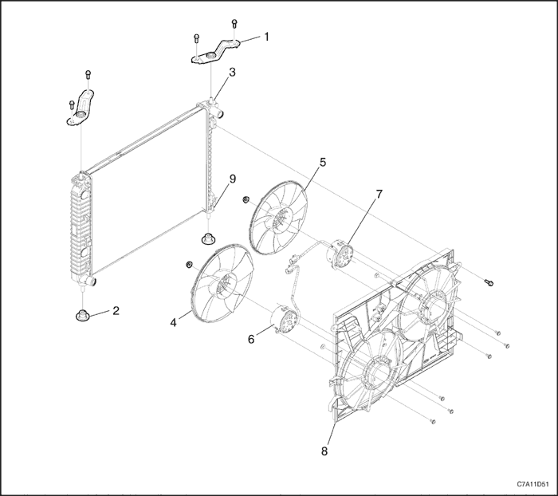


- Soporte superior del radiador
- Silentbloc (soporte elástico de fijación) inferior del radiador
- Radiador
- ventilador principal
- ventilador auxiliar
- Motor del ventilador de refrigeración principal
- Motor del ventilador de refrigeración auxiliar
- Conjunto del carenado del ventilador de refrigeración
- Espita de drenaje de refrigerante
Bomba de agua y termostato
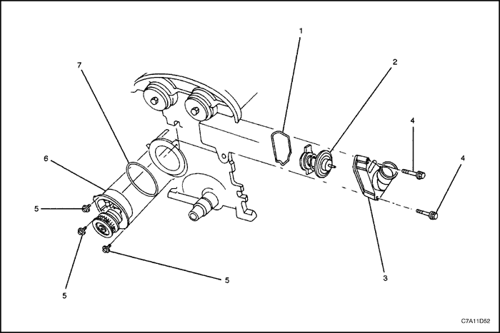
- (arandela de) junta
- Termostato
- Caja del termostato
- Tornillos de fijación de la caja del termostato
- Tornillo de fijación de la bomba de agua
- Bomba de agua
- (arandela de) junta
DIAGNÓSTICO
Comprobación del termostato
- Desmonte el termostato del vehículo. Consulte el apartado "Termostato" de esta sección.
- Asegúrese de que el muelle de válvula esté apretado cuando el termostato esté completamente cerrado. Si el muelle está flojo, sustituya el termostato.
- Introduzca el termostato y un termómetro en un recipiente con una mezcla al 50% de Dex-cool/refrigerante a base de silicato y agua. No deje que el termostato ni el termómetro descansen sobre el fondo del recipiente, ya que la desigual distribución del calor en el fondo podría dar lugar a unas mediciones de temperatura inexactas.
- Caliente el recipiente con un mechero.
- Utilice el termómetro para medir la temperatura de la solución cuando esté caliente.
- El termostato debe empezar a abrirse a los 87°C (189°F) y debe estar completamente abierto a los 102°C (216°F). Si no se abre a estas temperaturas, sustituya el termostato.
Diagnóstico del sistema de refrigeración
El motor se calienta en exceso
| Comprobaciones | Medida |
| Compruebe si se pierde refrigerante. | Añada refrigerante. |
| Compruebe si la solución del refrigerante es débil. | Confirme que la solución del refrigerante sea una mezcla al 50% de agua y etilenglicol. |
| Compruebe si hay suciedad, hojas o insectos en la parte delantera del radiador. | Limpie la parte delantera del radiador. |
| Compruebe si hay fugas en los manguitos, la bomba de agua, el calefactor, la caja del termostato, el radiador, los tapones del panal del radiador o en la junta de la culata. | Sustituya cualquier componente dañado. |
| Compruebe si el termostato está defectuoso. | Sustituya un termostato dañado. |
| Compruebe si se da un reglaje del encendido retardado. | Efectúe un diagnóstico por códigos del ECM. Confirme la integridad de la correa de distribución. |
| Compruebe si el ventilador eléctrico del sistema de refrigeración funciona correctamente. | Sustituya el ventilador eléctrico. |
| Compruebe si los manguitos del radiador están obstruidos o deteriorados. | Sustituya cualquier manguito del radiador dañado. |
| Compruebe si funciona debidamente la bomba de agua. | Sustituya la bomba de agua defectuosa. |
| Compruebe si el tapón del vaso de compensación está defectuoso. | Sustituya el tapón del vaso de compensación defectuoso. |
| Compruebe si hay grietas u obstrucciones en la culata o en el bloque del motor. | Repare la culata o el bloque del motor dañado. |
Pérdida de refrigerante
| Comprobaciones | Medida |
| Compruebe si hay alguna fuga en el radiador. | Sustituya el radiador dañado. |
| Compruebe la presencia de fugas en los puntos siguientes: - Vaso de compensación.
- Manguito.
| Sustituya las piezas siguientes, según sea necesario: - Vaso de compensación.
- Manguito.
|
| Compruebe si los manguitos del radiador, manguitos del calefactor y sus conexiones están flojos o dañados. | Afiance la conexión de los manguitos. Sustituya los manguitos o las abrazaderas. |
| Compruebe si hay fugas en la junta estanca de la bomba de agua. | Sustituya la junta estanca de la bomba de agua. |
| Compruebe si hay fugas en la junta de la bomba de agua. | Sustituya la junta de la bomba de agua. |
| Compruebe si el par de apriete de la culata es correcto. | Apriete los tornillos de acuerdo con las especificaciones. Sustituya la junta de la culata, si fuera necesario. |
| Compruebe la presencia de fugas en los puntos siguientes: - Colector de admisión.
- Junta de la culata
- Tapón del bloque de cilindros
- Núcleo del calefactor
- Tapón de drenaje del radiador
| Repare o sustituya cualquier componente que sea necesario para corregir la fuga. |
El motor no alcanza la temperatura de funcionamiento normal o sale aire frío del calefactor
| Comprobaciones | Medida |
| Compruebe si el termostato se ha quedado agarrotado en posición abierta o si es un tipo incorrecto de termostato. | Monte un termostato nuevo del tipo y rango térmico correctos. |
| Compruebe el nivel del refrigerante para determinar si está por debajo de la marca de MIN en el vaso de compensación. | Añada suficiente refrigerante para elevar el nivel del líquido hasta la marca especificada en el vaso de compensación. |
MANTENIMIENTO Y REPARACIÓN
SERVICIO EN VEHÍCULO

Purgar y llenar el sistema de refrigeración
Importante: El sistema de refrigeración del vehículo está diseñado para que se use refrigerante Dex-cool, de color rojo, o refrigerante a base de silicato, que es azul. Estos dos tipos de refrigerantes no son compatibles entre sí y nunca deben mezclarse. Aunque se vacíe por completo el sistema de refrigeración antes de volver a llenarlo, no hay que cambiar de tipo de refrigerante.
Precaución: No desmonte el tapón del vaso de compensación mientras estén calientes el motor y el radiador. Se puede producir una emisión violenta de líquido caliente y vapor debido a la alta presión.
- Coloque un recipiente debajo del vehículo para recoger el refrigerante que se vaya a extraer.
- Quite el tapón del vaso de compensación.
- Quite el tapón de drenaje.
Precaución: Deseche el refrigerante usado en un depósito de recogida de este tipo de líquido, el cual se recogerá junto con el aceite usado para su eliminación. No vierta nunca el refrigerante usado por el desagüe.
- Recoja el líquido que salga en una bandeja de drenaje.
- Elimine todos los lodos y suciedad del interior de la cámara de compensación. Consulte el apartado "Vaso de compensación" de esta sección.
- Ponga el tapón de drenaje.
- Añada agua limpia al depósito de compensación.
- Llene el vaso lentamente de manera que el manguito superior del vaso quede por encima de la línea del agua. Esto permite la salida del aire que haya en el interior del sistema de refrigeración.
- Ponga el motor en marcha.
- Tenga en marcha el motor hasta que se abra el termostato. Se puede saber si el termostato está abierto tocando los manguitos del radiador para ver si están calientes.
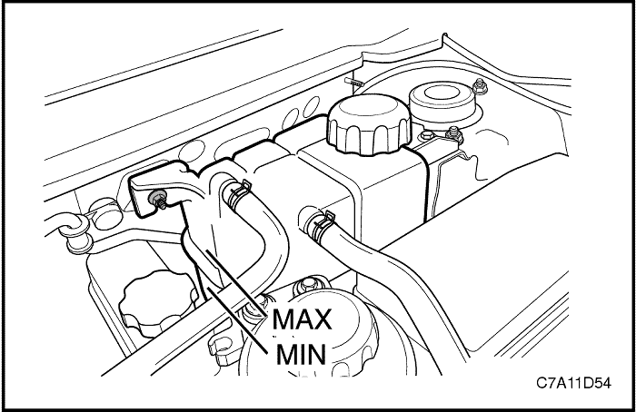
- Pare el motor.
- Repita los pasos 1 a 9 hasta que el agua que salga esté limpia y no contenga ni refrigerante ni óxido.
Aviso: No utilice nunca una mezcla de anticongelante con una concentración mayor del 60% de éste y 40% de agua. El punto de congelación de la solución aumenta por encima de esta concentración.
- Rellene el sistema de refrigeración mediante la cámara de compensación con una mezcla de Dexcool y agua. La mezcla debe tener, al menos, un 50% de anticongelante, pero nunca más de un 60% del mismo.
- Llene el vaso de compensación hasta la marca de MAX en el exterior del vaso.
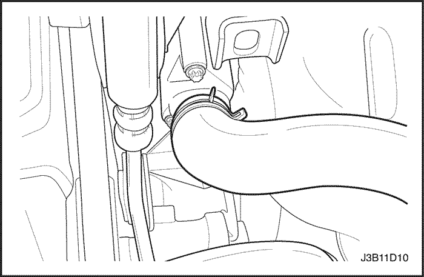
Termostato
Procedimiento de desmontaje
Precaución: Para evitar lesiones personales, no desmonte el tapón del vaso de compensación mientras el motor y el radiador estén calientes, ya que el calor hace que el sistema permanezca sometido a presión. Se puede producir una emisión violenta de líquido caliente y vapor debido a la alta presión.
- Extraiga el refrigerante. Consulte el apartado "Vaciado y llenado del sistema de refrigeración" de esta sección.
- Afloje la abrazadera del manguito superior del radiador, en la caja del termostato.
- Desconecte el manguito superior del radiador de la caja del termostato.
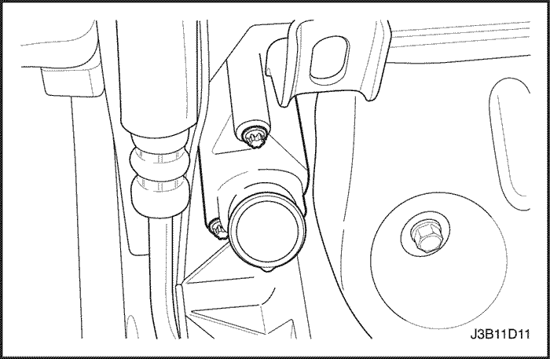
- Desmonte los tornillos de fijación que sujetan la caja del termostato a la culata.
- Desmonte la caja del termostato de la culata.
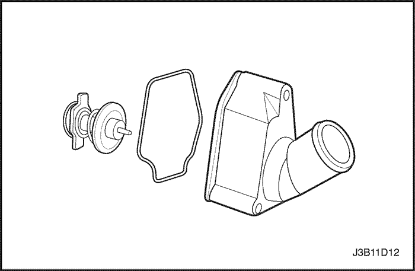
- Retire la arandela de junta de la caja del termostato.
- Extraiga el termostato de su caja haciendo presión hacia abajo sobre la brida de fijación del mismo y, a continuación, haciendo girar esta brida en el sentido de las agujas del reloj.
- Compruebe el asiento de la válvula en busca de cualquier materia extraña que pueda impedir que se cierre correctamente.
- Compruebe el correcto funcionamiento del termostato. Consulte el apartado "Comprobación del termostato" de esta sección.
- Limpie la caja del termostato y las caras de acoplamiento de la culata.
procedimiento de montaje
- Monte el termostato en su caja haciendo presión hacia abajo sobre la brida de fijación del mismo y, a continuación, haciendo girar esta brida en sentido contrario a las agujas del reloj. Haga girar la brida de fijación del termostato hasta que quede acoplada en los huecos de la caja del termostato.
- Monte la nueva arandela de junta en el hueco de la caja del termostato.
- Monte la caja del termostato en la culata.
- Sujete la caja del termostato a la culata con los tornillos de fijación.
Apretar
Apriete los tornillos de fijación de la caja del termostato hasta 15 N•m (11 lb-pie).
- Conecte el manguito superior del radiador a la caja del termostato.
- Asegure el manguito superior del radiador a la caja del termostato con una abrazadera para manguito.
- Llene el sistema de refrigeración del motor. Consulte el apartado "Vaciado y llenado del sistema de refrigeración" de esta sección.
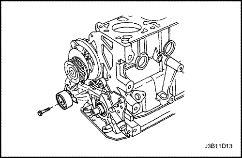
Bomba de agua
Procedimiento de desmontaje
- Vacíe el sistema de refrigeración del motor hasta un nivel por debajo de la caja del termostato. Consulte el apartado "Vaciado y llenado del sistema de refrigeración" de esta sección.
- Desmonte la correa de distribución. Consulte la Sección 1C1, "Mecánica del motor - FAM II 2.4D".
- Desmonte el tensor automático de la correa de distribución.
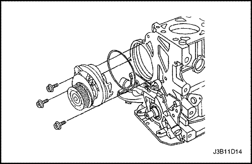
- Quite los tornillos de fijación de la bomba de agua.
- Desmonte la bomba de agua del bloque del motor.
- Desmonte la junta anular de la bomba de agua.
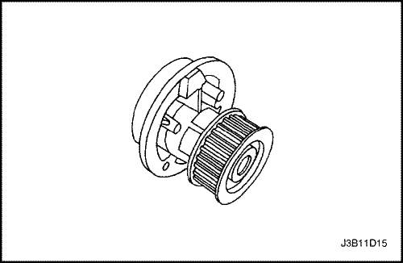
procedimiento de inspección y limpieza
- Compruebe el cuerpo de la bomba de agua en busca de grietas y fugas.
- Compruebe si hay juego libre o algún ruido anormal en el cojinete de la bomba de agua.
- Compruebe si hay un desgaste excesivo en la polea de la bomba de agua. Si la bomba está defectuosa, sustitúyala como una unidad.
- Limpie las superficies de acoplamiento de la bomba de agua y del bloque del motor.
procedimiento de montaje
- Coloque una nueva junta anular en la bomba de agua.
- Monte la bomba de agua en el bloque del motor con la brida alineada con el hueco de la tapa trasera de la correa de distribución.
- Sujete la bomba de agua al bloque del motor con los tornillos de fijación.
Apretar
Apriete los tornillos de fijación de la bomba de agua hasta 25 N•m (18 lb-pie).
- Monte el tensor automático de la correa de la distribución en la bomba de aceite con la brida metida en el hueco de la bomba de aceite.
- Monte los tornillos del tensor automático de la correa de distribución. No apriete todavía el tornillo en su totalidad.
- Monte la correa de distribución. Consulte la Sección 1C1, "Mecánica del motor - FAM II 2.4D".
- Llene el sistema de refrigeración del motor. Consulte el apartado "Vaciado y llenado del sistema de refrigeración" de esta sección.
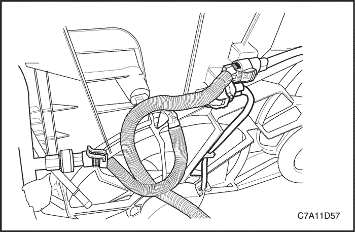
Conjunto del ventilador eléctrico del sistema de refrigeración
Procedimiento de desmontaje
- Desconecte el cable negativo de la batería.
- Quite la cubierta del motor y el soporte de la cubierta del motor.
- Desmonte la batería. Consulte la Sección 1E2, Sistema eléctrico del motor - FAM II 2.4D.
- Desmonte el conjunto de filtro del aire. Consulte la Sección 1C1, "Mecánica del motor - FAM II 2.4D".
- Desenchufe los conectores eléctricos del ventilador de refrigeración y el conector del sensor de presión de A/C.
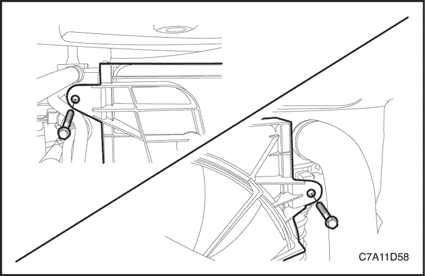
- Quite los tornillos de fijación del carenado del ventilador de refrigeración.
- Desmonte el manguito de alimentación de aceite de la dirección asistida y el soporte de fijación del tubo, y retírelo del conjunto del ventilador de refrigeración. Consulte la Sección 6A, "Sistema de la dirección asistida".
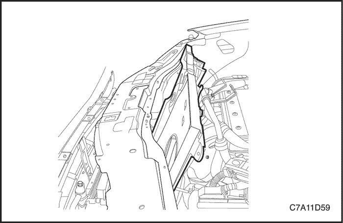
- Tire hacia arriba del conjunto carenado del ventilador y extraiga el conjunto del ventilador de refrigeración del vehículo.
- Desmonte las aspas del ventilador principal y del ventilador auxiliar del conjunto del carenado del ventilador quitando la tuerca del centro de los bujes del ventilador.
- Quite los tornillos de retención de los dos motores del ventilador.
- Desmonte los dos motores de los ventiladores de su carenado.
procedimiento de montaje
Precaución: Si el conjunto del ventilador se dobla o sufre cualquier tipo de daño, no intente reparar o volver a utilizar la pieza dañada. Un conjunto de ventilador doblado o dañado debe ser sustituido siempre por otro nuevo. Es esencial mantener los conjuntos de los ventiladores perfectamente equilibrados. Un conjunto de ventilador que no esté correctamente equilibrado puede averiarse y desprenderse estando en funcionamiento, lo que supone un gran peligro. No puede garantizarse un equilibrio correcto en un conjunto de ventilador que esté doblado o dañado.
- Monte los dos motores en el carenado.
- Sujete los motores al carenado con los tornillos de fijación.
Apretar
Apriete los tornillos de retención del motor del ventilador hasta 3,5 N•m (31 lb-pulg.).
- Monte las aspas del ventilador en el conjunto carenado con las tuercas en el centro del buje del ventilador.
Apretar
Apriete las tuercas de fijación de las aspas del ventilador hasta 5,6 N•m (50 lb-pulg.).
- Monte el conjunto del ventilador de refrigeración en el radiador.
Importante: Asegúrese de pasar la lengüeta del borde inferior del carenado por el clip de fijación del radiador.
- Sujete el conjunto del ventilador de refrigeración a la parte superior del radiador con los tornillos de fijación.
Apretar
Apriete los tornillos de fijación del conjunto del ventilador de refrigeración hasta 4 N•m (35 lb-pulg.).
- Enchufe los conectores eléctricos del ventilador de refrigeración y el conector del sensor de presión de A/C.
- Monte el manguito de alimentación de aceite de la dirección asistida y el tornillo del soporte de fijación del tubo, y retírelo del conjunto del ventilador de refrigeración. Consulte la Sección 6A, "Sistema de la dirección asistida".
- Monte el conjunto del filtro de aire. Consulte la Sección 1C1, "Mecánica del motor - FAM II 2.4D".
- Monte la batería. Consulte la Sección 1E2, Sistema eléctrico del motor - FAM II 2.4D.
- Monte la cubierta del motor y el soporte de la cubierta del motor.
- Conecte el cable negativo de la batería.
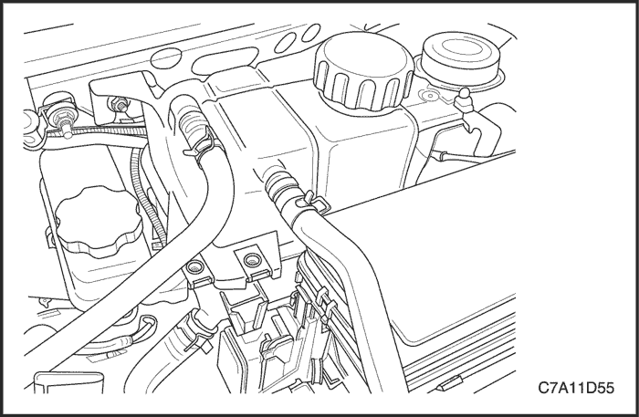
Cámara de compensación
Procedimiento de desmontaje
Precaución: Para evitar lesiones personales, no desmonte el tapón del vaso de compensación mientras el motor y el radiador estén calientes, ya que el calor hace que el sistema permanezca sometido a presión. Se puede producir una emisión violenta de líquido caliente y vapor debido a la alta presión.
- Extraiga refrigerante del motor hasta que su nivel esté por debajo del vaso de compensación.
Nota: No vacíe el aceite de la dirección asistida por el momento.
- Quite los tornillos de retención del depósito de aceite de la dirección asistida y aparte el depósito del vaso de compensación. Consulte la Sección 6A, "Sistema de la dirección asistida".
- Afloje la abrazadera del manguito de retorno y desconecte dicho manguito de la parte superior del vaso de compensación.
- Afloje la abrazadera del manguito del cuerpo del acelerador y desconecte dicho manguito de la parte superior del vaso de compensación.
- Afloje la abrazadera del manguito de alimentación y desconecte dicho manguito de la parte inferior del vaso de compensación.
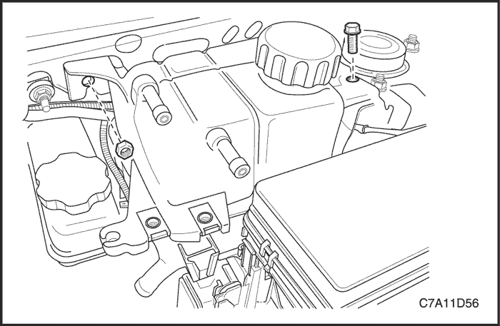
- Quite el tornillo y la tuerca de fijación de la cámara de compensación.
- Desmonte el vaso de compensación.
- Limpie el interior y el exterior del vaso de compensación y el tapón del mismo con agua y jabón.
- Aclare a fondo el vaso de compensación junto con su tapón.
procedimiento de montaje
- Monte el vaso de compensación.
- Sujete la cámara de compensación con el tornillo y la tuerca de fijación.
Apretar
Apriete el tornillo y la tuerca de fijación de la cámara de compensación hasta 8 N•m (71 lb-pulg.).
- Conecte el manguito de retorno y el manguito del cuerpo del acelerador a la parte superior del vaso de compensación.
- Conecte el manguito de alimentación a la parte inferior del vaso de compensación.
- Sujete el manguito de retorno, el manguito del cuerpo del acelerador y el manguito de alimentación al vaso de compensación con las abrazaderas de los manguitos.
- Llene el vaso de compensación de refrigerante hasta la arista central o hasta la marca MAX.
Radiador
Procedimiento de desmontaje
- Desconecte el cable negativo de la batería.
- Vacíe el sistema de refrigeración del motor. Consulte el apartado "Vaciado y llenado del sistema de refrigeración" de esta sección.
- Quite la cubierta del motor y el soporte de la cubierta del motor.
- Desenchufe los conectores eléctricos del ventilador de refrigeración y el conector del sensor de presión de A/C.

- Desmonte la guía superior de la rejilla del radiador. Consulte la Sección 9R, Parte delantera de la carrocería.
- Desmonte el soporte superior e inferior del condensador de A/C del radiador. Consulte la Sección 7B, Sistema de calefacción, ventilación y aire acondicionado de control manual.
- Cuelgue el condensador de A/C para evitar que se caiga.
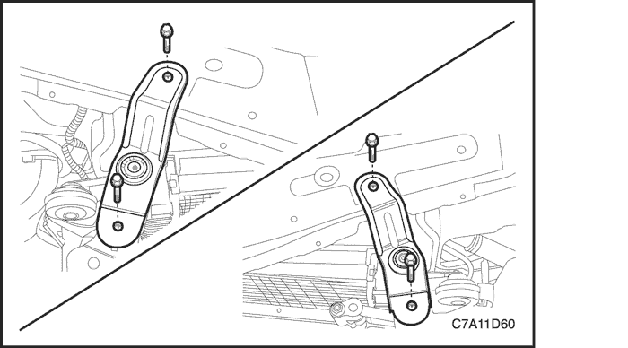
- Quite los tornillos de fijación del soporte superior del radiador.
- Desmonte los soportes superiores del radiador.
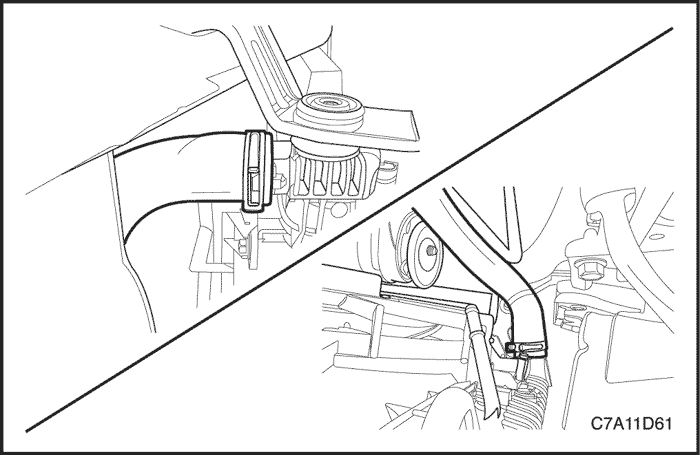
- Desconecte los tubos del refrigerador de aceite de la caja de cambios del depósito inferior del radiador, si dispone del mismo.
- Afloje la abrazadera del manguito del radiador superior y desconecte el manguito del radiador.
- Afloje la abrazadera del manguito del radiador inferior y desconecte este manguito del radiador.
- Afloje la abrazadera y desconecte el manguito de retorno de refrigerante.
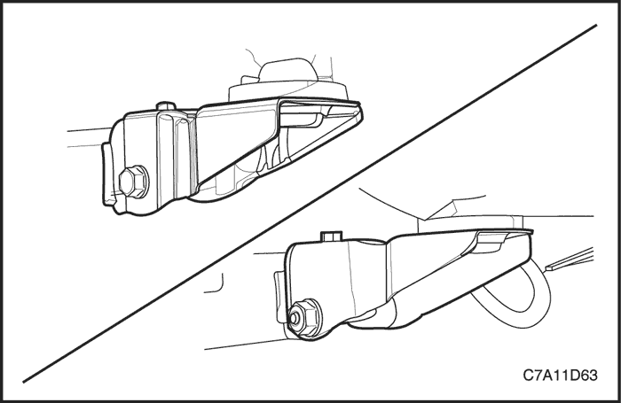
- Levante y apoye el vehículo adecuadamente.
- Quite los tornillos superiores de fijación del soporte del conjunto del condensador, el radiador y el módulo del ventilador (CRFM).
- Quite los tornillos pasantes y las tuercas del soporte del conjunto CRFM.
- Desmonte los soportes del conjunto CRFM.
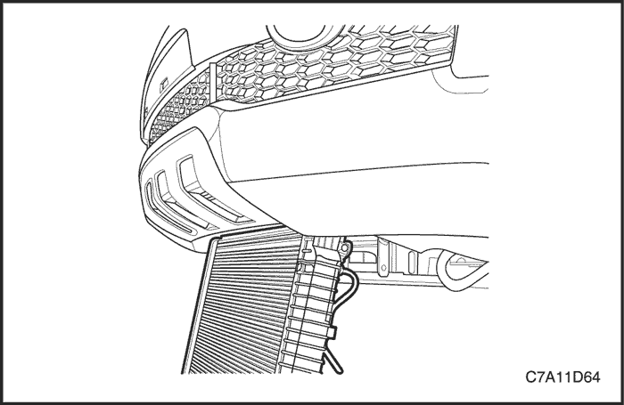
Precaución: No dañe las aletas del radiador para un correcto funcionamiento del sistema de refrigeración.
- Baje con cuidado el radiador y el ventilador del vehículo.
- Desmonte el radiador.
- Desmonte el conjunto del ventilador de refrigeración del radiador si fuera necesario.
Limpieza
Precaución: NUNCA pulverice agua sobre un radiador caliente. El vapor resultante podría provocar lesiones personales.
Aviso: Las aletas del radiador son necesarias para una buena transferencia térmica. No cepille las aletas. Esto puede provocar daños en las aletas, reduciendo la transferencia térmica.
Importante: Retire los insectos, hojas, suciedad y otros restos insuflando aire comprimido a través del lateral del motor del radiador.
Algunas condiciones pueden requerir el uso de agua caliente y un detergente suave.
- Limpie las aletas de refrigeración del radiador.
- Enderece cualquier aleta de refrigeración dañada.
procedimiento de montaje
Precaución: No dañe las aletas del radiador para un correcto funcionamiento del sistema de refrigeración.
- Instale el conjunto del ventilador de refrigeración si fuera necesario.
- Monte el radiador.
- Eleve con cuidado el radiador hasta la posición previa.
- Monte los dos soportes del conjunto CRFM.
- Coloque los tornillos pasantes y las tuercas en el soporte del conjunto CRFM.
Apretar
Apriete los tornillos pasantes y las tuercas del soporte del conjunto CRFM hasta 50 N•m (37 lb-pie).
- Coloque los tornillos superiores de fijación del soporte del conjunto CRFM.
Apretar
Apriete los tornillos de fijación del soporte del conjunto CRFM hasta 50 N•m (37 lb-pie).
- Conecte el manguito del radiador inferior al radiador y fije la abrazadera.
- Conecte el manguito del radiador superior al radiador y fija la abrazadera.
- Conecte los tubos del refrigerador al radiador, si dispone del mismo.
- Conecte el manguito de retorno de refrigerante.
- Instale el condensador de A/C al radiador.
- Monte los soportes de fijación del radiador.
Apretar
Apriete los tornillos de retención del soporte superior del radiador hasta 20 N•m (15 lb-pie).
- Monte la guía superior de la rejilla del radiador. Consulte la Sección 9R, Parte delantera de la carrocería.
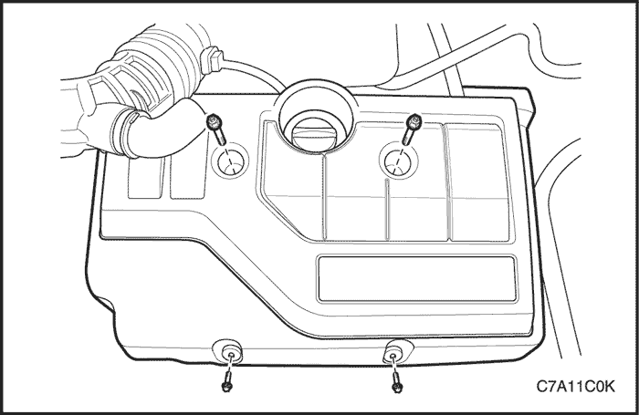
- Monte el soporte de la cubierta del motor y la cubierta.
- Llene el sistema de refrigeración del motor. Consulte el apartado "Vaciado y llenado del sistema de refrigeración" de esta sección.
- Conecte el cable negativo de la batería.
DESCRIPCIÓN GENERAL Y FUNCIONAMIENTO DEL SISTEMA
Descripción general
El sistema de refrigeración mantiene la temperatura del motor siempre a un nivel apropiado para su correcto funcionamiento.
Cuando el motor está frío, el sistema de refrigeración no enfría el motor, o lo hace lentamente. Esto permite al motor calentarse rápidamente.
El sistema de refrigeración incluye un radiador y un subsistema de recuperación, ventiladores, un termostato y su caja, una bomba de agua y una correa de accionamiento de dicha bomba. La correa de distribución acciona, asimismo, la bomba de agua.
Todos los componentes deben estar en perfecto estado para que el sistema funcione correctamente. La bomba de agua succiona el refrigerante del radiador. A continuación, el refrigerante circula por las camisas húmedas en el bloque del motor, el colector de admisión y la culata. Cuando el refrigerante alcanza la temperatura operativa del termostato, éste se abre. A continuación, el refrigerante vuelve al radiador donde se enfría. Este sistema envía refrigerante al núcleo del calefactor a través de los manguitos. Esto permite los procesos de calefacción y descongelación. El vaso de compensación está conectado al radiador de modo que recupera el refrigerante desplazado por la expansión debida a las altas temperaturas.
El vaso de compensación mantiene el nivel apropiado de refrigerante.
El sistema de refrigeración de este vehículo carece de tapón de radiador o boca de llenado. El refrigerante se añade a través del vaso de compensación.
Radiador
Este vehículo presenta un radiador de aluminio fino -y-tubo ligero. Hay depósitos de plástico montados en la parte superior e inferior del núcleo del radiador.
En vehículos equipados con cajas de cambios automáticas, las tuberías del refrigerador de aceite de la caja de cambios pasan por el depósito izquierdo del radiador. El radiador dispone de un grifo de drenaje. Para vaciar el sistema de refrigeración, abra el grifo de drenaje.
Cámara de compensación
El vaso de compensación es un receptáculo de plástico, parecido al depósito de lavado del parabrisas.
El vaso de compensación está conectado mediante un manguito al radiador y mediante otro manguito se conecta al sistema de refrigeración del motor. Cuando se conduce el vehículo, el refrigerante del motor se calienta y se expande. La parte de refrigerante desplazado por esta expansión circula desde el radiador hasta el vaso de compensación. Allí se desgasifica el aire atrapado en el radiador y el motor.
Cuando se para el motor, el refrigerante se enfría y se contrae. Entonces, el refrigerante desplazado retorna al radiador y al motor. Esto hace que el radiador se mantenga siempre en los niveles deseados de refrigerante e incrementa la eficacia de la refrigeración.
Cuando el sistema esté frío, mantenga el nivel de refrigerante entre las marcas de MIN y MAX del vaso de compensación.
Bomba de agua
La bomba de agua centrífuga accionada por correa está compuesta de un rodete, un eje de accionamiento y una polea de la correa. La bomba de agua va montada sobre la parte delantera del motor de montaje transversal y es accionada por medio de la correa de distribución.
Un cojinete completamente sellado sujeta el rodete. La bomba de agua se repara como un conjunto y, por consiguiente, no puede desmontarse en piezas.
Termostato
Un termostato tipo-bola de cera controla el flujo del refrigerante por el sistema de refrigeración del motor. El termostato va montado en la caja del termostato hacia la parte delantera de la culata.
El termostato detiene el flujo de refrigerante que va del motor al radiador con el objeto de facilitar un - calentamiento más rápido y de regular la temperatura del refrigerante. Cuando el refrigerante del motor está frío, el termostato permanece cerrado, evitando así la circulación de refrigerante a través del radiador. En este punto, sólo se deja circular el refrigerante por todo el núcleo del calefactor con el fin de calentarlo rápida y uniformemente
A medida que se calienta el motor, se abre el termostato. Esto permite al refrigerante circular por el radiador, donde se atenúa el calor. El hecho de que el termostato se cierre y se abra favorece que llegue refrigerante al radiador y el motor funcione a una temperatura adecuada y dentro de los límites.
La bola de cera del termostato está sellada herméticamente en una caja metálica. El elemento de cera del termostato se expande con el calor y se contrae con el frío.
A medida que se conduce el vehículo y el motor se va calentando, la temperatura del refrigerante aumenta. Cuando el refrigerante alcanza una temperatura determinada, el elemento de bola de cera que hay en el termostato se expande, ejerciendo presión contra la caja metálica y obligando a la válvula a abrirse. Esto permite que el refrigerante circule por el sistema de refrigeración y enfríe el motor. Cuando la bola de cera se enfría, la contracción hace que un muelle cierre la válvula.
El termostato empieza a abrirse a 87°C (189°F) y se abre por completo a 102°C (216°F). El termostato se cierra a 86°C (187°F).
Ventilador de refrigeración eléctrico
Precaución: Con el fin de evitar daños personales, mantenga las manos, herramientas y prendas de vestir alejadas de los ventiladores de refrigeración. Este ventilador es eléctrico y puede entrar en funcionamiento esté o no el motor encendido.
Precaución: Si algún aspa del ventilador se dobla o sufre cualquier tipo de daño, no intente reparar o volver a utilizar la pieza dañada. Un ventilador doblado o dañado debe ser sustituido siempre por otro nuevo. Si no se hace así, pueden producirse lesiones personales.
Los ventiladores de refrigeración van montados detrás del radiador en el compartimento motor. El sistema de refrigeración de este vehículo cuenta con dos ventiladores de refrigeración: el ventilador principal y el ventilador auxiliar. Los ventiladores eléctricos del sistema de refrigeración incrementan el flujo de aire que pasa a través del ventilador del radiador y del condensador en los vehículos equipados con aire acondicionado (A/A). Esto contribuye a aumentar la rapidez de refrigeración cuando el vehículo se encuentra en ralentí o circula a poca velocidad.
Un vehículo equipado con A/C o sin A/C tiene dos ventiladores en el único carenado. El tamaño del ventilador principal es de 340 mm (13,4 pulgadas) de diámetro, con cinco aspas, y el tamaño del ventilador auxiliar es de 320 mm (12,6 pulgadas) de diámetro con siete aspas para ayudar a que el flujo de aire pase por el radiador y el condensador. Dos motores eléctricos de los ventiladores, acoplados a cada uno de ellos en sus carenados, impulsan ambos ventiladores.
A/A apagado o modelo sin A/A
- Los ventiladores de refrigeración se accionan mediante el módulo de control electrónico (ECM), utilizando el relé del ventilador de refrigeración en serie/paralelo.
- El ECM activará los ventiladores de refrigeración a baja velocidad cuando el refrigerante alcance una temperatura de 96°C (205°F), y a alta velocidad cuando ésta sea de 100°C (212°F).
- El ECM cambiará la velocidad de los ventiladores de alta a baja a los 94°C (201°F) y desactivará los ventiladores a los 90°C (194°F).
Aire acondicionado conectado
- El ECM encenderá los ventiladores de refrigeración a baja velocidad cuando se encienda el sistema de aire acondicionado. El ECM pasará a alta velocidad cuando la temperatura del refrigerante alcance 118°C (244°F) o la presión en el lado de alta del A/C alcance 1.760 kPa (255 pulg2).
- Los ventiladores de refrigeración volverán a baja velocidad cuando la temperatura del refrigerante alcance 115°C (239°F) o la presión en el lado de alta del A/C llegue a 1.347 kPa (195 lbs/pulg2).